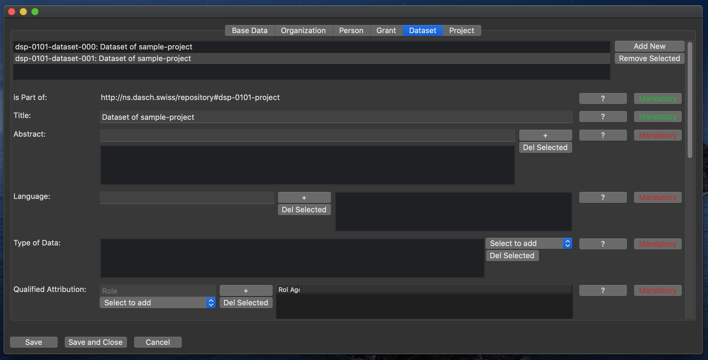

Dataset

This class represents one (of potentially many) dataset of the project.
Is Part of
Links the dataset to its project.
Note: This property is read-only and can not be changed.
Title
The title of the dataset.
(Mandatory.)
Abstract
Abstract of the dataset.
Can be the abstract text itself or a link to an abstract online.
(Mandatory. Can have multiple values.)
Language
The language the dataset is primarily made up of.
(Mandatory. Can have multiple values.)
Type of Data
The type of data the dataset is primarily made up of.
Select values from the drop-down. The available options are: XML, Text, Image, Movie, Audio.
(Mandatory. Can have multiple values.)
Qualified Attribution
Attribution of contributions to the dataset by people or organizations.
A qualified attribution consists of a sub-property agent denoting the person or organization (select from the drop-down), and a sub-property role, denoting the role the person/organization had, within the project.
(Mandatory. Can have multiple values.)
License
The license terms under which the dataset is published.
Note: A URL to the license definition is expected.
(Mandatory. Can have multiple values.)
How to Cite
Recommendation, how the dataset should be cited.
(Mandatory.)
Conditions of Access
Access conditions of the dataset.
Should normally be open access. A temporary embargo could be mentioned here too.
(Mandatory.)
Status
The status of the dataset within a project life cycle.
Select values from the drop-down. The available options are: In planning, Ongoing, On hold, Finished.
(Mandatory.)
Alternative URL
Alternative URL of the dataset.
This could for example include a link to a project specific website.
(Optional.)
Documentation
Documentation of the dataset.
This can either be a documentation text or a link to an online documentation.
(Optional. Can have multiple values.)
Date Published
The publication date of the dataset.
Use the date picker to select a date.
(Optional.)
Date Created
The creation date of the dataset.
Use the date picker to select a date.
(Optional.)
Date Modified
The latest modification date of the dataset.
Use the date picker to select a date.
(Optional.)
Distribution
Link to a download of the entire dataset.
(Optional.)